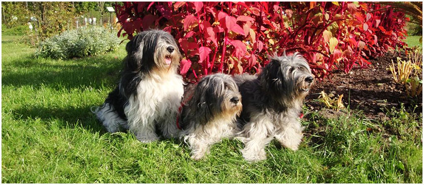

Hej
Jestem Michał, interesuję sie Kynologią, motoryzacją oraz sprzętem komputerowym. Od kiedy u wujka w hodowli Sekret Kadan pojawiła się Caneczka z Gangu Długich ciągle mnie do niej ciągnęło. Niestety pewnego dnia zdecydowali się ją oddać ponieważ jak to PONiutek (prawdziwy uparciuch) PODOBNO nie dogadywała się z psami innych ras w stadzie. Przyszedł dzień kiedy jej nowa pani musiała wyjechać za granicę do córki która urodziła dziecko, w efekcie chciała oddać sunię w dobre ręce. Tak oto Owczarka pojawiła się u nas. Ponieważ miała już 8 lat, mogła mieć ostatni miot, została pokryta psem IWANem z Zadymy. Z tego połączenia urodziły się 3 sunie i 3 pieski, sobie zostawiliśmy sunię którą nazwaliśmy FREZJA Sekret Kadan. Frezulka dorastała przyszedł więc czas aby po niej został jakiś ślad, więc pojechaliśmy do Państwa Kielar do Kałuszyna pod Legionowem. Ich pies CAR z Liliowego Zacisza 14.12.2010 roku został szczęśliwym ojcem trzech sunieczek o imieniach : ALPHA, ASTRA i AQUA już mojej hodowli Podlaski Czar FCI. Alpha swój nowy domek ma w miejscowości Tarnowskie Góry, ASTRA i AQUA Podlaski Czar FCI zostały z nami ;) 28.10.2017r. Szeregi mojej hodowli zasiliła EPIKA JUHASKA Banciarnia FCI, Kochany szkrab rośnie jak na drożdżach. Moja kochana EPIKA, jak przystało na Polskiego Owczarka drugiego Maja 2021 roku w "Święto Flagi", sprowadziła na świat kolejne pokolenie tych czasem niesfornych futrzaków. Urodził się piesek którego nowi właściciele nazwali : Ziggy Stardust Podlaski Czar FCI oraz suczka którą nazwałem FREZJA Podlaski Czar FCI, została z nami.
Nasza hodowla PODLASKI CZAR FCI należy do
ZKwP - Związku Kynologicznego w Polsce oddział w Białymstoku

Podlaski Ogród Botaniczny w Korycinach, chyba jedyny do którego można wejść z psiakami